診療支援部会は、診断時から緩和ケアを提供し、集学的治療及び標準的治療等の診療を提供するための支援組織です。下記からなります。
1.化学療法部
化学療法部について
化学療法部・キャンサーボード部 部長 小松嘉人
当院の化学療法部（通称：外来治療センター）は、各科で決定された薬物療法レジメンを患者さんに安全かつ効果的に投与する専門部署です。この部門は、医師、化学療法認定看護師、認定薬剤師など、専門知識と技術を持つ専属スタッフで構成されており、患者さん一人ひとりの状態に合わせた最適な治療を提供しています。限られたマンパワー・病床数にもかかわらず、年々利用患者数は増加しており、最近では看護師や薬剤師の努力により、年間12,000人を超える患者さんに治療を提供しています。
近年では最新の治験治療にも適宜対応し実施しています。また、設備面では、個室を含む11床のベッドとリクライニングシート12床を備え、全床に液晶テレビと読書灯を設置しています。車椅子に対応し広々としたオストメイト対応トイレも3か所設けています。治療中の快適性を重視し、BGMを流すとともに、雑誌やDVDプレーヤーの貸し出しも行っています。医療スタッフは「チーム医療」を常に意識し、患者さんが安全かつ快適に治療を受けられるよう努めています。治療は各科の外来診察後に開始され、薬剤の準備が整い次第、すぐに投与を開始します。治療中は、がん化学療法看護認定看護師を含む看護スタッフが定期的に観察を行い、薬剤アレルギーや血管外漏出などの有害事象の早期発見と対応をし、副作用の予防や日常生活上の注意点についての情報提供も積極的に行い、セルフケアの実践をサポートしています。さらに、当部門には当番医師が常駐しており（他施設では実現が困難な体制です）、薬物療法に伴う有害事象やアナフィラキシーショックなどの緊急時にも即時対応が可能であり、患者さんは安心して治療を受けることができます。
このように、当化学療法部における医療の質の高さと安全性は、患者さんから高い評価をいただいており、今後も患者さんが治療を通じて最良の結果を得られるよう、日々努力を重ねていく所存です。
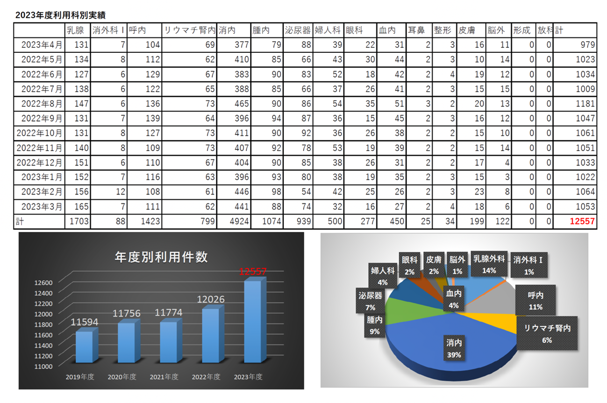
外来治療センター
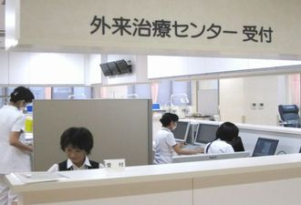
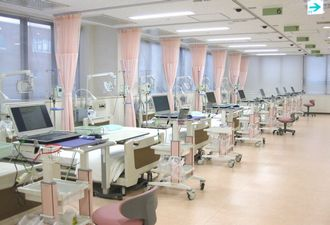
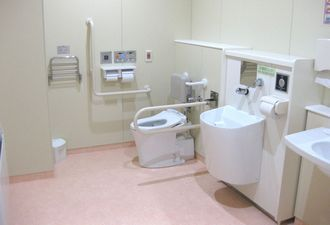
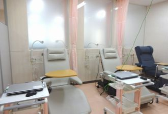
薬剤師は、主に2つの業務を行っています。
-
抗がん薬無菌調製
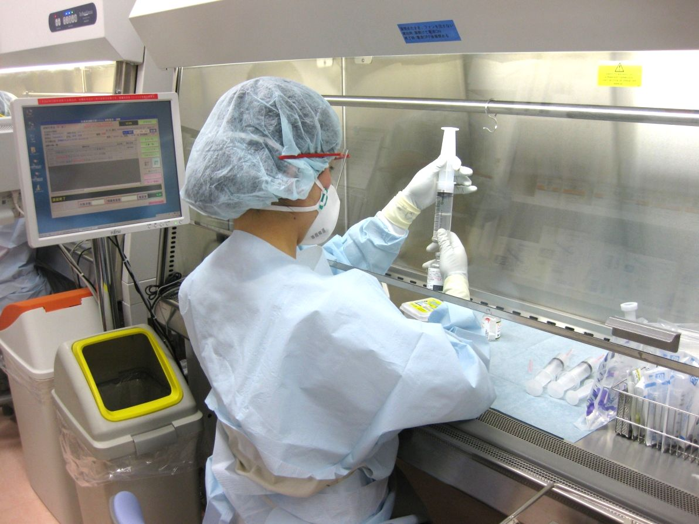
抗がん薬の組み合わせや投与量が手順書（プロトコール）に沿っているか、患者さんひとりひとりの状態（当日の臨床検査値、体調等）にあっているかをお薬の調製前に確認します。
問題がなければ、安全キャビネットと呼ばれる清浄区域内で無菌的に薬剤を調製します。
-
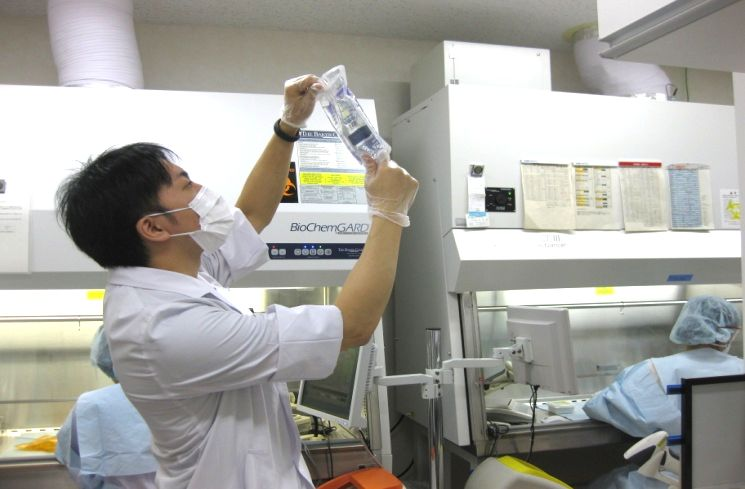
調製後の薬剤は、正しく調製が行われているかを調整システムを用いて確認し、異物や浮遊物がないかを確認します。
-
服薬相談
がん患者さんを中心に、抗がん薬を代表とした薬全般の効果や副作用に関する説明を行っています。また、患者さんの希望に応じて、現在困っている症状について良い解決策がないか一緒に考え、より良い薬の使い方、新しい薬の処方を医師に提案しています。実際に薬を調剤する薬局にも必要な情報を提供し、患者さんの負担が少しでも軽くなるように工夫しています。
2.緩和ケアセンター
緩和ケアセンターは、専門的緩和ケアを提供する院内拠点組織です。専従のジェネラルマネージャーを配置し、緩和ケアチーム、緩和ケア外来、緊急緩和ケア病床等を有機的に統合します。がん看護に関する専門資格を有する看護師等による定期的ながん患者カウンセリング、緊急緩和ケア病床の確保、地域の病院の緩和ケア病棟との連携協力、研修の運営体制構築、研修修了者の把握等を行い、質の高いがん医療を提供します。がん患者の身体的苦痛や精神心理的苦痛、社会的な問題等のスクリーニングを、診断時から外来及び病棟にて行うことのできる体制を整備します。
緩和ケアチーム
緩和ケアについて
患者さんの身体とこころに生じるつらさ（苦痛）を取り除き、患者さんが自分らしく生きていくための医療を緩和ケアといいます。
緩和ケアは、患者さんの苦痛を身体の苦痛だけではなく、社会生活あるいはご家族までを含めた全体として捉え（全人的苦痛＝トータルペイン）、サポートしていきます。
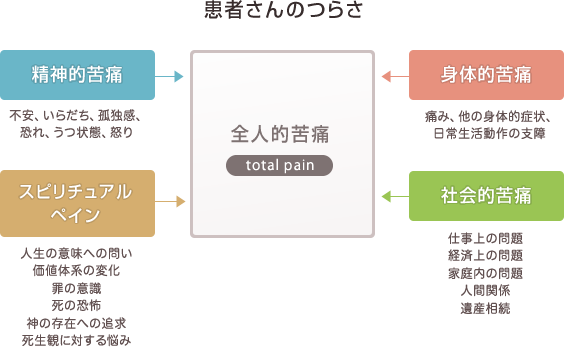
がんにおける緩和ケアは、がんが進行した時期だけではなく、がんと診断された時期から始まり、治療と並行して行います。つらい症状を抱えたままがん治療に向かうより、つらさをやわらげ、がん治療に取り組むことで自分らしく生きることにつながります。
また、治療が難しくなった時でも、何もできないということではなく、つらい症状をやわらげていくことができます。
緩和ケアチームについて
患者さんのもつ全人的苦痛を十分に緩和するためには、医師や看護師だけでは不十分です。そのため多職種の医療従事者が専門性をもってチームとして取り組む、チーム医療が大切です。
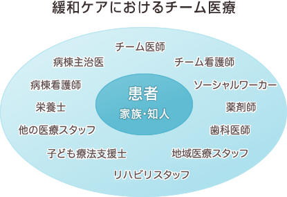
当院では緩和ケアチームが2008年4月より稼働し、多職種メンバーで主治医、病棟看護師と協力してチーム医療を行っております。身体症状の緩和を担当する医師、こころのつらさを和らげる精神科医、看護師、薬剤師、栄養士などがチームに参加しています。
活動内容
- 病室訪問による緩和ケア
- 緩和ケアカンファレンス（主治医、病棟看護師との合同カンファレンス）
- 患者さん、ご家族への病状説明への同席
- 病棟カンファレンス参加
- 医療者向けの研修会開催
緩和ケアチームにご相談いただける内容
- からだに生じるつらい症状への対応
痛み、息苦しさ、吐き気、しびれ、治療に影響を及ぼす症状など - こころのケア
不安、眠れない、気分が落ち込む、いらだち、落ち着かない気持ちなど - ご本人、ご家族の気がかりなことへの支援
今後の生活のこと、患者さんとどのように接したらよいのかわからないなど
相談方法
入院中のがん患者さんとそのご家族が対象で、「つらさ」を緩和することを目的としておりますので、病気の進行程度は問いません。
緩和ケアチームのサポートを希望される方は、入院後、病棟の主治医あるいは看護師にご相談ください。
緩和ケアチーム相談時の費用
当院では厚生労働省の定める正式な緩和ケアチームの要件を満たしており、開始から中止または退院まで、緩和ケア診療加算が加算されます。ただし、高額医療対象の方は、申請を行っていただければ自己負担額が軽減されます。
（緩和ケア診療加算の費用は1日あたり3,900円×健康保険の自己負担率です。例えば3割負担の場合には、1日あたり3,900円×0.3＝1,170円が医療費に加算されます。）
緩和ケア外来について
外来通院をしながらがん治療を受けられている患者さんへの緩和ケアの提供を目的とした緩和ケア外来も開設しております。
診察について
休祝日以外の月曜日午後と火曜日午前に、外来新棟1階診察室で診察を行っています。
完全予約外来となっておりますので、当日の予約外受診はお断りしております。
緩和ケアの提供が目的ですので、原疾患の治療は行いませんのでご理解ください。
対象となる患者さん
- 当院通院中のがん患者さんと後天性免疫不全症候群の患者さん。
- 他の医療機関に通院中のがん患者さんと後天性免疫不全症候群の患者さん。
このようなことにお困りでしたらご相談ください
- 痛みがある。
- 吐き気、便秘、食欲不振などの症状など。
- 呼吸が苦しい、体がだるい。
- 気分が優れない、落ち込んでいる、不安が強い、眠れないなど。
- ご自宅で過ごしたいが心配がある。緩和ケアのことを聞きたいなど。
診察の申し込み方法
- 当院外来の通院患者さん
⇒ 主治医に緩和ケア外来の受診をご相談ください。 - 他の医療機関に通院中の患者さん
⇒ 主治医から当院医事課初診予約係を通じて予約をお取りください。
お問い合わせ連絡先
緩和ケアについてご質問がある場合は、下記へご連絡ください。
- 緩和ケア全般について
がん相談支援センター
https://cancer.huhp.hokudai.ac.jp/about/support - 緩和ケア外来の予約について
医事課初診予約係
https://www.huhp.hokudai.ac.jp/hotnews/detail/00000405.html
小児緩和ケアチーム
小児がんは成人のがんに比べ非常に数が少ないため、ひとつひとつの疾患に関する情報が乏しく、小児患者さんご本人またご家族にとってはより不安の大きい試行錯誤の闘病生活になります。また、多くの小児患者さんが年齢的に一人で闘病することが難しいため、特に入院中はご兄弟をはじめ家族全体の生活に大きな変化をもたらします。
小児の緩和療法は年齢に応じた処方やコミュニケーション、意思決定、成人とは異なった家族ケアなど特有の問題を抱えています。成人領域のスタイルをそのまま当てはめることは困難で、小児診療チームの専門性と緩和ケアチームの専門性の融合が不可欠です。
本院では院内の小児患者さんやそのご家族の「つらさ」にも対応できるよう小児緩和ケアチームを設置し活動しています。
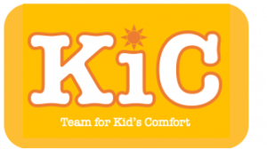
小児緩和ケアチーム（Team for Kid’s Comfort, KiC）の活動について
KiCは、Kid’s Comfort の略で「キック」という響きから、防御（武術）や前に進む推進力（水泳）、不適切なプレイヤーを退室させること（オンラインゲーム用語）を連想させる言葉として命名しました。
子ども達にとってより良い闘病環境を整え、苦痛を軽減することで、子ども達が「辛さ」を跳ね除け前に進んでいけるよう、すべての闘病期間を通じてサポートを行っていきます。
病気と闘っているお子さん本人だけでなく、ご両親やきょうだいなど家族全体をサポートの対象とします。また、大切なお子さんを亡くされたご家族へのサポートも行います。
チームは小児緩和ケアの対象疾患である、小児がん、循環器、神経・筋疾患の専門医師、小児救急看護認定看護師を含む看護師、薬剤師、保育士、子ども療養支援士、医療ソーシャルワーカーなどの専門スタッフで構成されています。
具体的な活動内容（予定含む）
・命を脅かす小児の稀少疾患に関する啓蒙活動
・闘病環境整備への提言
・検査時の安全性の向上
・苦痛緩和（疼痛、嘔気、呼吸苦、不眠、痙攣など）
・家族（きょうだい）支援
・ティーンズサポート
・在宅移行サポート
・グリーフサポート
・患者さんと患者会との橋渡し
・患者会との協働活動
・小児支持療法・緩和ケアに関する定期勉強会の開催
・小児支持療法・緩和ケアに関する全国の研修会の広報
・ピアサポートシステムの構築
・サバイバーキャンプなどの企画
など
3.小児・AYA世代がんセンター
小児・AYA世代がんセンターは、小児と思春期・若年成人（Adolescent and young adult）のがんを扱う本院内の拠点です。AYA世代は一般に15歳から39歳をさします。AYA世代のがんは、いわゆる希少がんが多いのですが、その種類は多く、また多くの診療科にまたがって診断・治療が行われるという特徴があります。具体的な病名をあげると、脳・脊髄腫瘍、胚細胞腫瘍、リンパ腫、白血病、軟部肉腫、骨・軟骨腫瘍、そして子宮頸がんが多くを占めます。一方、この世代は進学、就職、結婚、出産、育児などの人生における重要なライフイベントが起こるため、がんを発症した場合には生活に大きな困難をきたします。これらの問題点の多くは、壮年期以降の成人に比べて、小児との共通点が多く、2019年9月1日、小児・AYA世代がんセンターを立ち上げました。具体的には、稀ながんの診断と治療を確実に行い、がんの治療に伴う晩期合併症（妊孕性の問題も含む）への対策を立てるのみならず、教育、就労、心理社会支援、子ども支援、妊娠・出産、仕事と治療の両立などの問題に対して、多職種チームが支援する体制を整えます。そして課題ごとに行政の協力を得て地域ネットワークを立ち上げます。そのために本院では各診療科、各病棟が連携し、また医療者と患者サイドの情報共有と連携体制を取っております。
小児がんチーム
小児がんについて
小児がんは日本では年間2500-3000名（成人がんの約300分の1）が発症すると推定され、稀な疾患でありながら子どもの死亡原因の上位を占める疾患です。小児がんは成人がんと異なり、白血病などの造血器腫瘍や非上皮性腫瘍（脳腫瘍、胎児性腫瘍、肉腫）が多いことが特徴です。また抗がん剤による治療（化学療法といいます）や放射線治療がよく効く疾患が多いのも特徴で、きちんと治療すれば治癒が期待できる疾患も増えています。このため、ほとんど全ての患者さんで治癒を目標に治療を開始します。
稀な疾患であるため、成人がんのようにガイドラインといったものは存在せず、全国の小児がん診療施設が協力して、臨床研究という形でより適切な治療を模索し続けています。その中心となっているのが、日本小児がん研究グループ(JCCG)（現理事長：北海道大学病院小児科教授 真部淳）です。JCCGでは様々なエキスパートがチーム（委員会）を作り、多くの多施設共同臨床研究を行っています。
そのような活動の積み重ねにより、小児がんの予後は著しく改善され、近年では約80%の患者さんに治癒が望めますが、その一方で治療中のさまざまな困難や苦痛、長期入院を避けることは未だ難しいのが現状です。そのため診療内容の充実だけでなく、入院環境の向上、院内学級による教育の維持や各種サポート、並びにそれらの相談窓口の充実化が重要になっています。
また、小児がんでは子どもの豊かな臓器予備能を頼りにした強力な治療が良好な結果につながっていると言われますが、その一方で治療による急性合併症に加え、成長発達期の治療により、治癒した後も発育・発達障害、内分泌障害、臓器障害、性腺障害、高次脳機能障害、二次がんなどさまざまな問題に遭遇することがわかってきました。これらを晩期障害と呼びます。晩期障害は長期にわたって日常生活や就学・就労に支障を来すこともあるため、子ども自身に自分の病気について知ってもらい、ある程度の年齢になったら自ら健康管理をおこなえるようになるよう自立（自律）支援や、彼らを支える家族に向けた長期的な支援や配慮も重要であることが認識されるようになってきました。
小児がん拠点病院とは
2012年6月に国のがん対策推進基本計画において小児がんが重点項目のひとつと位置付けられ、それを受けて2013年2月に初めて当院を含む全国15箇所の小児がん拠点病院が指定され、2019年、2023年に指定更新されました。小児がん拠点病院は小児がん専門医をはじめとした小児がんの診療経験豊富な医療従事者や診療体制・支援体制などの整備状況により選考され、各地域ブロックにおける小児がん診療面のみならず長期入院小児患者さん・家族に対する様々な支援を行う中心的な役割を期待されています。病気療養中であっても他の健康な子どもたちと可能な限り同じ生活・教育環境の中で医療や支援を受けられるような環境を整備することが求められているのです。
本院は、小児がん拠点病院の一つとして、難治性疾患の集約化、支援の充実した全人的医療・先進医療の提供、長期フォローアップシステムの構築、小児がん診療を担う人材の育成など、質の高い小児がん医療の提供体制を目指し北海道で中心的な役割を果たしていきます。
小児がんチームについて
小児がん患者さんのサポートは診療を行う小児専門の医師や看護師だけでは不十分で、長期的な視点にも立って成人診療科医師を含む多職種のスタッフがそれぞれの専門的なスキルを活かしながらチームとして取り組むことが重要となります。これを受けて当院では腫瘍センター内に小児がんチームが組織されています。
北海道大学病院小児がんチームは、以下のメンバーで協力しながらチーム医療を行っています。
-
- 小児科医師（がん以外の各領域専門医も必要に応じ連携）
- 小児外科医師
- 脳神経外科医師
- 放射線治療科医師
- 血液内科医師
- 婦人科医師
- 精神神経科医師
- 腫瘍センター医師
- 緩和ケア医
- 病理医
- 歯科医師
- 薬剤師
- 小児病棟看護師
- 小児外来看護師
- 腫瘍センター看護師
- 小児がん専任社会福祉士
- チャイルドライフスペシャリスト (CLS)
- リハビリテーション部門スタッフ
- 院内学級関係者 など

活動内容
- 多職種連携による小児がん診療
- 合同カンファレンス
（小児科/小児外科/脳神経外科/放射線治療科/病理診断科/薬剤師/看護師 /MSW/病棟保育士/CLS） - 造血細胞移植症例検討会
（小児科医師・看護師/歯科/薬剤師/栄養士/病棟保育士/CLS） - 児童精神カンファレンス（小児科/児童精神科/心理士）
- 移行期医療カンファレンス（小児科/血液内科/内分泌内科ほか）
- 医療者向け研修会・セミナー、市民公開講座の企画・開催
- 小・中学校分校、北海道教育庁との連携
- 小児がん・若年悪性腫瘍疾患患者の妊孕性温存に関する支援体制の整備
- 小児がん経験者の長期フォローアップ・移行期医療の整備
- 小児緩和ケアならびに各種闘病サポート
- 小児がん関連の多施設共同臨床研究の立案・参加
診療内容
治癒を目指した集学的治療が行われます。集学的治療というのは、化学療法、外科療法、放射線療法、造血幹細胞移植などのさまざまな方法を組み合わせて行う治療のことをいいます。患者さんを治癒に導くために、複数の診療科が一緒に協力して診療にあたります。
小児がんチームの対象となる疾患
小児領域の悪性腫瘍は全て対象になります。その主な疾患は以下の通りです。
- 白血病
- 悪性リンパ腫
- 脳腫瘍
- 胚細胞腫瘍
- 神経芽細胞腫
- 横紋筋肉腫・ユーイング肉腫などの骨軟部腫瘍
- 腎腫瘍
- 肝芽腫
- 網膜芽細胞腫
- ランゲルハンス細胞組織球症 など
化学療法
抗がん剤による治療です。疾患により使う薬剤の組み合わせは異なります。白血病や悪性リンパ腫などの造血器腫瘍は化学療法が治療の中心的な役割を果たします。また神経芽腫などの固形腫瘍や脳腫瘍など化学療法感受性の悪性腫瘍においても、腫瘍の広がりを抑えたり、手術でのリスクを減らすよう腫瘍を小さくしたり、手術後の腫瘍の再増大を抑えるなど治療の重要な柱のひとつとなります。
外科療法
特に脳腫瘍や固形腫瘍では外科治療が非常に重要となります。手術で腫瘍が取り切れるかどうかは治癒に直結する、と言っても過言ではありません。最初に全部取り切れないような腫瘍の場合は、腫瘍の一部をとって（生検といいます）病気の診断を行い、化学療法や放射線療法で小さくしてから手術で腫瘍を取り除くという方法で治療する場合も少なくありません。複数の治療の連携が大切です。
放射線療法
脳腫瘍や固形腫瘍では外科治療とならんで、病巣部（腫瘍のある場所）の制御に重要な役割を果たします。本院には全国でもまだ数の少ない陽子線治療装置があります。陽子線治療では腫瘍を狙い撃ちして周囲の正常細胞への障害を少なくすることが期待されています。また放射線は造血幹細胞移植の前治療にも使うことがあります。
造血幹細胞移植・細胞療法
あらかじめ保存していた自分自身の造血細胞を戻す移植（自家移植）と、健康な方（いはゆるドナー）から造血細胞をもらう移植（同種移植）があります。大量の抗がん剤や放射線治療は、その治療効果を最大限に引き出そうとするのですが、それに伴って患者さんの造血が破壊されてしまいます。移植はその副作用対策のひとつであることになります。さらに、同種移植はドナー細胞が患者さんの身体の中に潜んでいる細胞（この場合、腫瘍細胞）を攻撃する免疫療法（同種免疫）の側面も持っています。同種免疫により抗腫瘍効果が期待できる疾患に積極的に行われます。本院では小児への造血幹細胞移植は2023年12月までで延べ358例に行っています。また難治性白血病に対する新たな治療として注目されているCAR-T療法もおこなっています。
支持療法・緩和療法
闘病中の子どもたちの苦痛を軽減し、先に述べたような集学的な治療を円滑に遂行するためにも支持療法・緩和療法は非常に重要です。小児の支持療法・緩和療法は年齢に応じた薬剤の選択・用量決定やコミュニケーション、両親と本人が関与する意思決定、家族ケアなど特有の問題を抱えています。成人領域のスタイルをそのままあてはめることは困難で、小児科医の専門性と緩和ケアチームの専門性の融合が不可欠です。本院では小児サポートチーム（Kid’ Comfort team, KiC）を立ち上げ、緩和ケアチームとの密な連携をとりながら日々の診療を支援しています。
診療実績
症例数
| 症例 | 2018 | 2019 | 2020 | 2021 | 2022 | |
|---|---|---|---|---|---|---|
| 造血器腫瘍 | 急性リンパ性白血病 | 5 | 5 | 6 | 4 | 4 |
| 急性骨髄性白血病 | 2 | 4 | 3 | 0 | 1 | |
| まれな白血病 | 0 | 1 | 0 | 0 | 1 | |
| MDS/MPDのうちCML | 0 | 2 | 0 | 0 | 0 | |
| MDS/MPDのうちCMLを除く | 1 | 0 | 2 | 0 | 0 | |
| 非ホジキンリンパ腫 | 7 | 2 | 0 | 2 | 4 | |
| ホジキンリンパ腫 | 0 | 0 | 1 | 0 | 1 | |
| その他のリンパ増殖性疾患 | 0 | 1 | 0 | 0 | 1 | |
| 組織球症（HLH） | 0 | 0 | 1 | 0 | 0 | |
| 組織球症（LCH） | 1 | 3 | 1 | 1 | 0 | |
| その他の組織球症 | 0 | 0 | 0 | 0 | 0 | |
| その他の造血器腫瘍 | 0 | 0 | 0 | 0 | 0 | |
| Down症TAM登録 | 0 | 2 | 0 | 1 | 1 | |
| 造血器腫瘍 合計 | 16 | 20 | 14 | 8 | 13 | |
| 固形腫瘍 | 神経芽腫瘍群 | 4 | 2 | 6 | 5 | 1 |
| 網膜芽腫 | 2 | 2 | 3 | 0 | 6 | |
| 腎腫瘍 | 0 | 1 | 1 | 0 | 1 | |
| 肝腫瘍 | 1 | 1 | 0 | 2 | 1 | |
| 骨腫瘍 | 1 | 2 | 1 | 0 | 0 | |
| 軟部腫瘍 | 5 | 4 | 4 | 1 | 1 | |
| 胚細胞腫瘍 （脳・脊髄病変以外） |
2 | 0 | 1 | 5 | 0 | |
| 脳脊髄腫瘍 | 19 | 18 | 22 | 26 | 13 | |
| その他の固形腫瘍 | 3 | 6 | 2 | 4 | 4 | |
| その他の固形腫瘍 （具体名） |
顎下腺癌 甲状腺癌 上咽頭癌 卵巣癌 卵巣カルチノイド 涙腺腺様嚢胞癌 胸腺カルチノイド |
甲状腺癌 | 下行結腸 耳下腺 |
耳下腺 肺下葉 上咽頭 卵巣 尿管口 |
膵体部 甲状腺 |
|
| 固形腫瘍 合計 | 37 | 36 | 40 | 43 | 27 |
※初発診断時年齢 18 歳以下の当院で治療を行った患者を算出
診療実績
| 診療実績 | 2018 | 2019 | 2020 | 2021 | 2022 | |
|---|---|---|---|---|---|---|
| 化学療法件数 | 35 | 40 | 62 | 44 | 57 | |
| 手術件数 | 固形腫瘍（下記以外） | 7 | 12 | 10 | 8 | 23 |
| 脳腫瘍 | 16 | 13 | 14 | 22 | 16 | |
| 眼・眼窩腫瘍 | 3 | 1 | 2 | 0 | 7 | |
| 骨・軟部腫瘍 | 3 | 3 | 2 | 3 | 3 | |
| 放射線療法件数 | 35 | 28 | 27 | 18 | 21 |
造血幹細胞移植症例数
本院では小児の造血幹細胞移植を積極的に行っています。これまでの総移植症例数は2023年12月までで、延べ358例に達しています。移植を利用した治療は通常の治療に比べると合併症の危険は高くなりますが、移植が必要な患者さんは皆、移植しないと治癒が期待できない難治性の病状の方です。従来の骨髄移植、末梢血幹細胞移植、臍帯血移植に加え、HLA半合致移植（ハプロ移植）、複数回移植、骨髄非破壊的移植などもおこなっています。造血幹細胞移植は小児がんだけでなく、原発性免疫不全症や再生不良性貧血のような免疫疾患や造血障害にも行います。
- 同種移植
- 骨髄移植(BMT)
-
血縁 94例 非血縁 66例
-
- 末梢血幹細胞移植(PBSCT)
-
血縁 16例
-
- 臍帯血移植(CBT)
-
血縁 3例 非血縁 90例
-
- 自家移植
-
骨髄移植 10例 末梢血幹細胞移植 69例 骨髄＋末梢血管細胞移植 7例 - その他 3例
外来のご案内
本院では、初めて受診される患者さんの待ち時間の短縮を図ることを目的として全診療科新来予約制・紹介制を導入しております。
初めて受診される方は下記をご参考ください。
入院生活について
小児がん拠点病院指定に伴う対応として、適切な療育環境の整備や患児の学習の充実化を図ることが求められています。病気療養中であっても、友人関係を構築したり、学校に通って教育を受けたりすることは小児の健全な発育には不可欠であり、退院後の生活を円滑に進めるためにも重要です。

病棟について
子どもたちが自由に遊ぶことが出来るプレイルームが設置されており、入院中であっても子どもらしい生活が送れるように、年齢に応じた成長発達を支援しています。ひな祭り、夏祭り、ハロウィン祭、クリスマス会など季節ごとにさまざまなイベントを行っています。コロナ禍の影響で現在は一時的にお休みしていますが、ボランティアさんによる読み聞かせや茶話会もおこなわれています。


ひまわり分校について
小学生や中学生が入院中も学習を継続できるように、病棟と直結したひまわり分校があります。入院中の学習の遅れを少なくすると同時に、入級することで病院以外の社会とのつながりや同世代の子ども同士の社会生活を維持し、心の安定を図り、ややもすると失いがちになる学習への意欲を持たせることが大きなねらいです。
通常の授業のほか、ひまわり集会等の行事や多様なゲストティーチャーを招いての総合的な学習の時間の取り組みも行っています。
高校生については北海道教育庁への協力校として一部の高校でICTを用いたオンライン授業が可能が場合があります。個別にご相談をお受けします。


ファミリーハウスについて
入院されている患者さんのご家族が宿泊等を希望される場合には、ファミリーハウスがご利用いただけます（予約制）。安価な料金で利用することが可能であり、部屋内にはキッチン、バス、トイレなどの設備と日常生活に必要な調理器具や家電を設置し、ご家族が安心して滞在できる環境を整えております。


小児がん相談
小児がん治療をされている患者さんとご家族に対し、療養に関すること、通院治療中の生活のこと、付き添いなど家族の方への支援、就学・復学に関することなどソーシャルワーカーが療養上や日常生活上の悩みや不安などについて相談をお受けいたします。ご相談内容については秘密を厳守しますので安心してご相談ください。
北海道大学病院腫瘍センター 小児がんチーム
電話番号: 011-716-1161 (内線：7758)
受付時間:休診日を除く月曜日～金曜日の9:00～16:00
相談は無料です。
小児がん患者さんとご家族のためのサポートブック
小児がん患者さんとご家族のみなさんが、療養生活を送る際に役立つ情報を取りまとめたサポートブックを作成しています（2021年に改訂）。
このサポートブックは、小児がんと診断された患者さんやご家族が活用できる相談窓口や、経済的・社会的な支援制度についてわかりやすく掲載しています。
下記よりダウンロードすることもできますので、ぜひご活用ください。
小児がん患者さんとご家族のみなさんが、療養生活を送る際に役立つ情報を取りまとめたサポートブックを作成しています（2021年に改訂）。
このサポートブックは、小児がんと診断された患者さんやご家族が活用できる相談窓口や、経済的・社会的な支援制度についてわかりやすく掲載しています。
下記よりダウンロードすることもできますので、ぜひご活用ください。
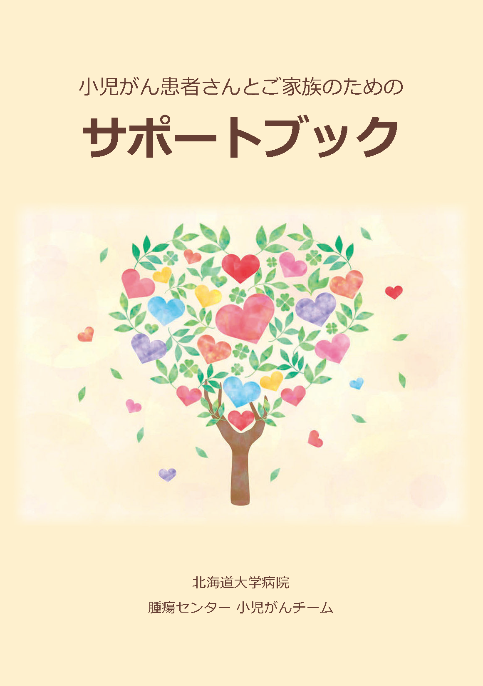
小児がん患者さんとご家族のためのサポートブック
AYA世代支援チーム
○ AYA世代
AYA（アヤ）世代とは、Adolescent＆Young Adult（思春期・若年成人）のことをいい、一般的には15歳〜39歳までの方がそれにあてはまります。AYA世代と一括りに言っても中学生から子供を持つ親世代まで多種多様です。よって、AYA世代の年代の方が「がん」と診断された場合、一人一人の患者さんに適したサポートが求められています。
○ AYA世代のがん
AYA世代のがんは、同世代の病死の主原因の１つです。15歳〜39歳という年齢は、学校に通っている方、就職活動を行っている方、結婚している方、子育てしている方など、その生活背景は多岐にわたります。小児期から活動性の高い思春期・若年成人世代といった、人生の中でもターニングポイントが特に多いこの世代が「がん」を発症し治療を行い、社会復帰していく中で、多様な課題に直面していることが問題となっています。しかしながら、AYA世代に発症するがんに対する対策は遅れており、その診療体制が定まっていないのが現状です。その原因として、他の世代に比べて患者数が少ないこと、さらには疾患構成が多様であることが挙げられます。医療の進歩に伴い「がんサバイバー」が増えている中で、個々のAYA世代のがん患者の状況に応じた多様なニーズに対応できるよう、情報提供、支援体制及び診療体制の整備等が求められています。
○ 北海道大学病院におけるAYA世代支援チームの発足
上記背景をもとに、各領域におけるがん拠点（がん関連拠点）病院として機能している北海道大学病院においても、AYA世代のがん患者への支援をより充実させる目的に、腫瘍センター内の組織として、2018年8月、AYA世代支援チームを発足することとなりました。その後、2019年9月からは、小児・AYAがんセンターの下部組織として活動を継続しています。
○ AYA世代がん患者における移行期医療の充実
医療の進歩により、小児期に「がん」を患った患者さんの多くがサバイバーとして思春期・成人期を迎える時代になっています。移行期医療とは、小児期の医療から成人期の医療へスムーズに橋渡しすることを言います。しかしながら、全国的に見ても、小児科から成人診療科への移行がスムーズに行われていない現状があります。
北海道大学病院では、当チーム内でこの課題について共有し、話し合うことで、よりスムーズに成人診療科に移行できる体制作りを目指しています。
○ 妊孕性温存に関する取り組み
「妊孕性」とは、妊娠するための力のことです。がんに対する治療を受けることで、その治療内容によっては、妊孕性が低下、すなわち妊娠するための力が低下してしまうことが問題となっています。これは男性・女性どちらにも関わることです。患者さんの年齢、病気の種類や病状などによっては、妊孕性温存への対応が必ずしも出来ないことがありますが、当チームでは、院内外の施設と連携することで、希望される患者さんにできるだけ妊孕性温存療法を提供できる体制づくりを目指しています。
北海道小児・AYA世代のがん患者等の妊よう性温存療法研究促進事業のご案内
○ AYA世代支援チーム 構成員（北海道大学病院）
AYA世代支援チーム長
血液内科 後藤秀樹
| チーム構成 |
| 血液内科 |
| 腫瘍内科 |
| 外科系 |
| 精神科神経科 |
| 小児科 |
| 放射線治療科 |
| 呼吸器内科 |
| 消化器外科Ⅰ |
| 消化器外科Ⅱ |
| 婦人科 |
| 耳鼻咽喉科 |
| 泌尿器科 |
| 脳神経外科 |
| 口腔外科 |
| 子ども療養支援士 |
| 病棟看護師（若干名） |
| 造血細胞移植コーディネーター |
| 緩和ケアチーム |
| 薬物療法に携わる薬剤師 |
| がん患者看護に関連する専門看護師又は認定看護師 |
| がん患者看護に関連する専門看護師又は小児看護に関連する看護師 |
| 社会福祉士 |
○ リーフレット
AYA世代のがん患者が課題・悩みを抱えても、誰に相談したら良いか分からないというご意見に対し、相談できる窓口（がん相談支援センター）があることを広く周知することを目的にチーム内でリーフレットを作成しました。患者様やご家族で何かお困りのことがありましたら、まずはがん相談支援センターまでご相談ください。

4.放射線治療チーム
腫瘍に対する放射線療法は、X線治療、陽子線治療、密封小線源治療、非密封小線源治療など、選択肢が広がっております。一方で、手術、化学療法、免疫療法、緩和ケアなどとの組み合わせる機会が増え、多様な知識が求められるようになっています。放射線治療チームでは、これらの多岐にわたる各治療法を安全かつ効果的に活用するために、放射線科医、診療放射線技師、看護師、医学物理士、線量測定士らが緊密に連携しています。
5.がんゲノム医療・遺伝カウンセリングチーム
がん遺伝子診断部・病理部等が各診療科・各部門の協力のもと行っている、がん遺伝子パネル検査、および、臨床遺伝子診療部が行っている家族性腫瘍の遺伝カウンセリングについて、腫瘍センターの立場で支援します。また、がん遺伝子パネル検査によって家族性腫瘍が偶発的に見つかり、遺伝カウンセリングに導く場合がありますが、そのような場合、がん遺伝子診断部と臨床遺伝子診療部の連携を支援します。
6.治療と仕事の両立支援チーム
治療と仕事の両立支援チームは、がん患者さんの就労に関する相談支援、および治療と仕事の両立支援に関わります。
がんは、広い世代にわたり発症し、多くの診療科にまたがって診断・治療が⾏われるという特徴があります。がんを発症した場合には、お仕事を継続してよいのか、休止すべきなのか、いつ復職してよいのかなど、いろいろ心配になるはずです。一方で、がんの治癒率が高まり、70歳定年が叫ばれる今、がん治療と仕事等との両立は、すべての患者さんにとっても、わが国の発展にとっても、非常に重要なことです。
両立支援の仕方は、がんの種類にかかわらず共通点が多いため、2020年4⽉1⽇、腫瘍センター内に治療と仕事の両立支援チームを立ち上げました。
具体的には、両立支援担当の医師と両立支援コーディネーターの研修を受講した看護師・社会福祉士が、主治医や会社の方からの情報をもとに治療計画への助言や両立・復職に向けた助言を行います。
がん治療の専門医等が、治療中にお仕事をする上で配慮してほしいことを会社の方に伝えたり、お仕事との両立を配慮して治療計画を立てるために、主治医に情報提供したりします。
チーム構成
治療と仕事の両立支援には、がん治療の経験の豊富な医師、看護師や社会保険労務士を含む多職種のスタッフがそれぞれの専⾨的なスキルを活かしながらチームとして取り組むことが、効率的です。腫瘍センターでは、がん相談支援センターのスタッフを軸として、各診療科等と連携し、患者さんやご家族の⽀援、会社との体制を構築しています。
当チームは、以下のコア・メンバーと、各診療科等医師・看護師・他職員が協⼒・連携しながら、チーム医療を⾏っています。
1.リーダー 医師
2.副リーダー 看護師長
3.両立支援コーディネーター 看護師
4.両立支援コーディネーター 社会福祉士
最終更新 2020年7月2日